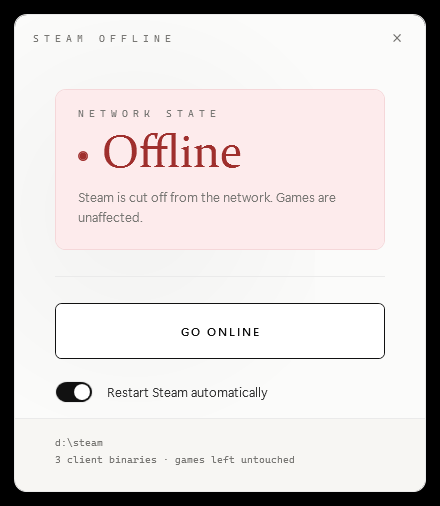

Windows 10 / 11 · Free & open source
One button puts Steam into Offline Mode by blocking the Steam client in Windows Firewall. Your games keep their internet. Click again to go back online.
137 KB · no installer · MIT licence

Steam has a built-in Offline Mode, but it refuses to offer it while it can still see the internet. This tool removes that: it writes Windows Firewall rules for the three Steam client executables, so Steam concludes there is no connection and starts offline. Nothing else on the machine loses network access — not your browser, not your games, not other launchers.
Same button goes offline and comes back. No modes, no settings to learn.
A single 137 KB executable. Delete the file and it is gone.
Only the Steam client is blocked. Multiplayer keeps working.
Optional. Steam caches its network state, so a restart is what makes the change take effect.
Download SteamOffline.exe, run it, press the button. It asks for
administrator rights because firewall rules cannot be written without them.
Close Steam first, or leave the restart option on and it is handled for you.
To undo everything without the app, open PowerShell as administrator:
Get-NetFirewallRule -DisplayName "SteamOfflineMode*" | Remove-NetFirewallRule
Every rule the app creates carries the SteamOfflineMode prefix,
so that single command removes all of them and nothing else.
It asks for administrator rights, which is a fair reason to be suspicious. So, precisely: it creates firewall rules for three Steam executables and reads the registry to find where Steam is installed. It does not connect to the internet, install services, add startup entries, or write to the registry.
The released binary is built by GitHub Actions on a clean runner straight
from the public source, not on somebody's desktop. The build log is public
and a SHA256 file sits next to the download. If that is still not enough,
the whole program is about 500 lines of C# you can read, and
build.ps1 compiles it with the compiler that already ships with
Windows — no SDK, no package manager.
It is not code-signed, because certificates cost money. Windows SmartScreen will show a blue warning for it, as it does for any unsigned program: More info → Run anyway. Building it yourself avoids the warning entirely.
No. Offline Mode is a normal Steam feature, and blocking an application in your own firewall is a normal thing to do with your own computer. Nothing is patched, injected, or modified inside Steam.
Yes. Only the Steam client's own executables are blocked. Game
executables under steamapps\common keep full network access.
Games that authenticate through the Steam client itself will of course
notice that it is offline.
Steam needs to have logged in online at least once with "remember my password" before it will offer Offline Mode. Go back online, sign in normally with that box ticked, then switch off again.
Press the button to go back online, then delete the executable. If you want to be thorough, the PowerShell command above removes every rule it ever created.
Yes, Windows 10 and 11. It needs .NET Framework 4.8, which both ship with by default.
Программа отрезает от сети только клиент Steam правилами брандмауэра Windows, поэтому Steam запускается в офлайн-режиме. Интернет на компьютере и сами игры при этом работают. Одна кнопка переключает туда и обратно. Требуются права администратора, иначе правила брандмауэра не записать. Установка не нужна, это один файл; удаляется удалением файла.